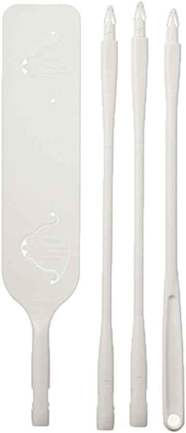
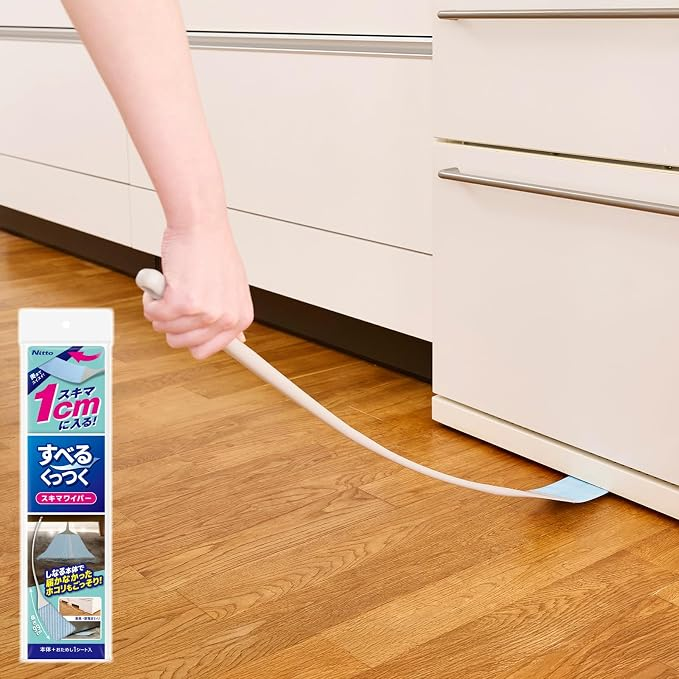
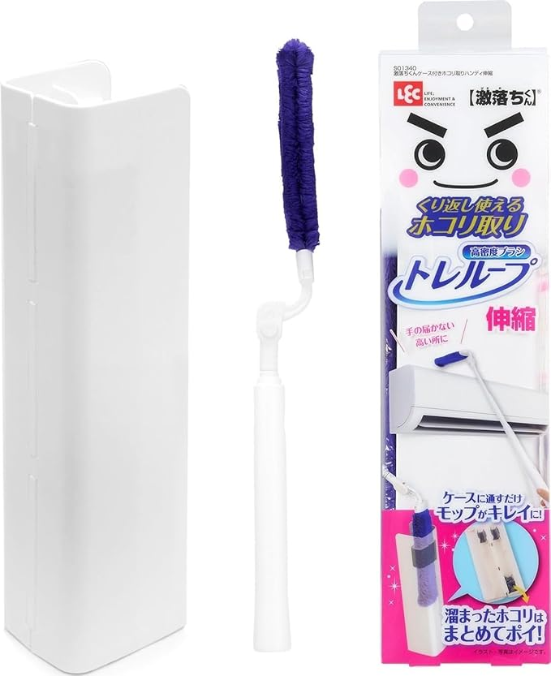
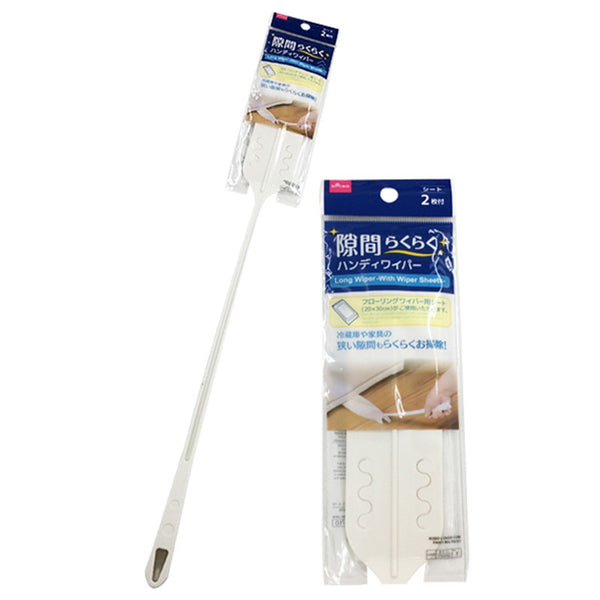

冷蔵庫・家具のすき間掃除、仕組みで全然違う
——シート式・粘着式・くり返しブラシ・100均を比較

冷蔵庫や家具の下にたまったホコリを取ろうとすると、掃除機のノズルも入らない、フローリングワイパーも幅が合わない、という壁にぶつかります。専用の「すき間掃除グッズ」を探すと、シートを装着して使い捨てるタイプから、専用の粘着シートでかき集めるタイプ、洗わずくり返し使えるブラシタイプまで、思った以上に仕組みが違います。
Amazonの定番品に加えて、100円ショップの商品も比較に加えました。参考にしたのは、実際に使っている方々のレビューです。
選び方の整理
見るところは2つです。
- 仕組み — 使い捨てシート式・専用の粘着シート式・くり返しブラシ式で、隙間への入りやすさや後片付けの手間が変わる
- 長さの調整 — 固定長の商品と、パーツの着脱や伸縮で長さを変えられる商品がある
※本文中の商品リンクはアフィリエイトリンクです（PR）。商品ページとレビューをもとにまとめています。
一覧
- アズマ工業 シートでスキマキーレー（シート10枚入・全長67cm）¥918★4.0（311件）
- カインズ 奥まで届くすき間ワイパー（シート5枚入・高さ37〜138cm）¥1,480★3.9（28件）
- ニトムズ すべる くっつく スキマワイパー（シート1枚付・全長99cm）¥1,430★4.0（1件）
- レック 激落ちくん トレループ（伸縮タイプ・くり返し使用）¥1,644★4.2（615件）
- ダイソー 隙間らくらくハンディワイパー（シート2枚入・全長55cm）¥110★3.0（1件）
※価格・評価・レビュー件数は2026年8月15日時点のAmazon.co.jpの情報です（ダイソーのみ公式オンラインショップの表示）。同梱シート数で単純に割った「1枚あたり」の金額は、本体価格が大半を占めるため参考程度にとどめ、下記の各商品の項で継続コストにふれています。
仕組みの違い
いちばん多いのは、市販の汎用フロアワイパーシート（30×20cm、各社共通サイズ）を装着して使う「使い捨てシート式」で、アズマ工業・カインズ・ダイソーがこれにあたります。シートが手元になくなっても、ドラッグストアで買い足せるのが利点です。カインズだけはパーツを4つに着脱して高さを37〜138cmまで変えられ、アズマ工業とダイソーは固定長です。
ニトムズは仕組みが異なり、汎用シートは使えず専用の粘着シートのみに対応しています。「粘着の力で狭いスキマのホコリ等を落とさずしっかりキャッチ」という独自機構で、本体ヘッドの厚さは約2mmと薄く作られています。レックはさらに違う方式で、使い捨てシートを一切使いません。しなるブラシでホコリを絡め取り、専用ケースに通すだけでブラシ自体がきれいになる仕組みです。
それぞれの性格
アズマ工業 シートでスキマキーレー（シート10枚入・¥918）
定番中の定番といえる商品で、レビュー件数はこのジャンルで最多クラスの311件、評価は★4.0です。市販の30×20cmシートが使え、本体には「TKふんわりワイパーシート」10枚が付属するので買い足しなしですぐ使えます。「100均とは大違い！とても使いやすいし丈夫です」というレビューがある一方、「シートのセットが面倒」「柄が一度セットすると外せない」という不満も見かけます。全長67cmの固定タイプで、冷蔵庫下のような奥まった隙間の定番選択です。
カインズ 奥まで届くすき間ワイパー（シート5枚入・¥1,480）

アズマ工業と同じくシートを装着して使うタイプですが、パーツを4つに分割・連結できるのが特徴で、高さ37cmから138cmまで長さを変えられます（伸縮ではなく着脱式）。「壁にそって食器棚の側面、背面や冷蔵庫の下を柔らかく入って隙間ごみが綺麗に取れて重宝」というレビューがある一方、「ソファー下の埃が綺麗に取れず、2回使用して今は全く使用していない」という評価も見かけます。評価は★3.9（28件）とレビュー数は多くありませんが、隙間の奥行きに合わせて長さを変えたい人向けの選択肢です。
ニトムズ すべる くっつく スキマワイパー（シート1枚付・¥1,430）

比較的新しく登場した商品で、仕組みが他の2つと違います。汎用シートではなく、粘着面と滑り加工を組み合わせた専用シートでホコリを絡め取る方式です。本体ヘッドの厚さは約2mmと薄く、公式では約1cmの隙間に対応するとしています。実際に使った方のレビューでは「スティックがしなるのと、吸着部が薄いので、結構スルスルと隙間に入ってくれる」「冷蔵庫下の埃を取りたくて購入し、結果からいうと目的は達成できました」とのこと。一方で「本体にはシートが1枚しか付属しない」「雑に扱うとシートが剥がれる場合がある」という指摘も。替えシートは15枚入¥699（1枚あたり約¥47）で、専用シートを買い続ける前提の商品です。
レック 激落ちくん トレループ（伸縮タイプ・¥1,644）

他の4点と違い、使い捨てシートを一切使いません。しなるブラシでホコリを絡め取り、専用ケースに通すだけでブラシがきれいになる仕組みです。評価は★4.2（615件）とこのジャンルでは最多のレビュー数で、「はたき・ほこり取り」カテゴリのベストセラー1位でもあります。「筒に通すだけでホコリを落とせるため、ホコリ処理のストレスがかなり軽減されます」「冷蔵庫の端っことか掃除機の入らない場所とかのお掃除にいいですね」という声がある一方、「伸ばしたときのグラグラ感が不安定」という指摘も見かけます。シート代が一切かからないので、長く使うほど経済的です。
ダイソー 隙間らくらくハンディワイパー（シート2枚入・¥110）

100円ショップの商品ですが、仕組みはアズマ工業やカインズと同じシート装着式で、市販の汎用シートも使えます。サイズは5×55×1.5cmとやや小ぶりで、シートは2枚付属です。オンラインストアには珍しくレビューが1件あり、評価は★3.0で「普通。便利だけど、まあ値段的には、良い」とのこと。まず試してみたい人、複数の隙間にまとめて置いておきたい人に向いています。
選ぶなら
- 実績と評価を重視するなら、レックのトレループ（★4.2・615件）。シート代がかからず長く使うほど経済的
- 定番のシート式ですぐ使いたいなら、アズマ工業（★4.0・311件、シート10枚付属）
- 隙間の奥行きに合わせて長さを変えたいなら、カインズ（37〜138cmを4段階で調整）
- 専用の粘着シートでしっかりキャッチしたいなら、ニトムズ（薄さ2mmのヘッドで1cmの隙間に対応）
- まず1個だけ試したいなら、ダイソーの隙間らくらくハンディワイパー（¥110）
冷蔵庫や家具の下は、普段見えない分ホコリがたまりやすい場所です。仕組みの違いと、シート代がかかり続けるかどうかを見比べて、掃除の頻度や隙間の奥行きに合うものを選ぶのがよさそうです。